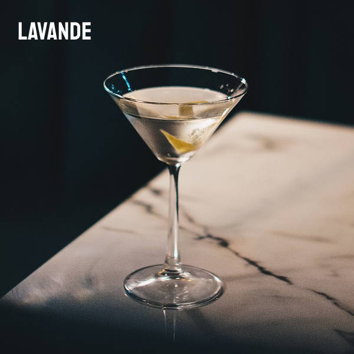
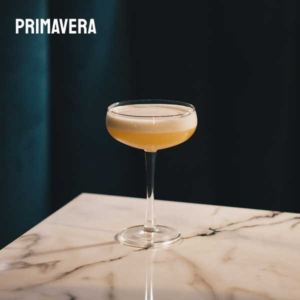
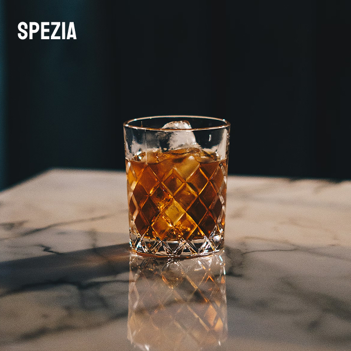

odin-bar
home
menu
find-us

A delicate and floral aperitif with notes of lavender and chamomile.

A refreshing and vibrant aperitif with bright citrus notes.

A bold, spiced aperitif featuring cardamom, ginger, and cinnamon.